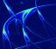

Welcome to the Matt Brocchini Memorial
Savage Rabbit Art Gallery

Savage Rabbit Art Gallery
In here you'll find strange attractors, Mandelbrot zooms, artificial landscapes, iterated parametric equations, fractal aggregate growth and Lyapunov sets. Here's a taste of the art generated by iterated endomorphisms of the plane.
 For a journey through Lyapunov Space, enter the Lyapunov Rabbit Wing.
 To view the whorls and sunflowers of Seahorse Valley, enter the
Mandelbrot Rabbit Wing.
To view the whorls and sunflowers of Seahorse Valley, enter the
Mandelbrot Rabbit Wing.
 Check out the strange attractors in the
Endomorphic Rabbit Wing.
Check out the strange attractors in the
Endomorphic Rabbit Wing.
Go where no person will ever go in the Topographic Rabbit Wing.
See simulations of fractal aggregate growth in the Sporographic Rabbit Wing.
Investigate the dynamics of iterated systems of parametric equations in the Iterographic Rabbit Wing.
Figure out the mystery guests in this bizarre exhibit.
Catch a glimpse of the Savage Rabbit curators with a few of their friends in this Curator Collage #1
and the psychedelicized version - Curator Collage #2.
Scrutinize the enigmatic equestrian and egalitarian ethos of faith
or ponder the depth of Manly Men.
This HTML document created and maintained by
Ronald Joe Record (rr@ronrecord.com)